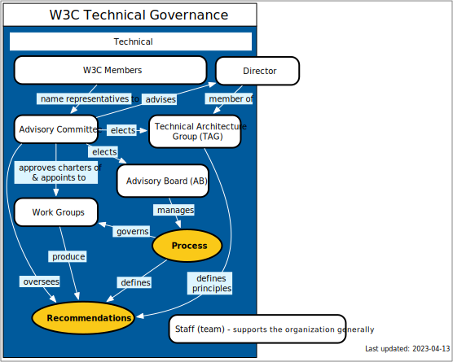
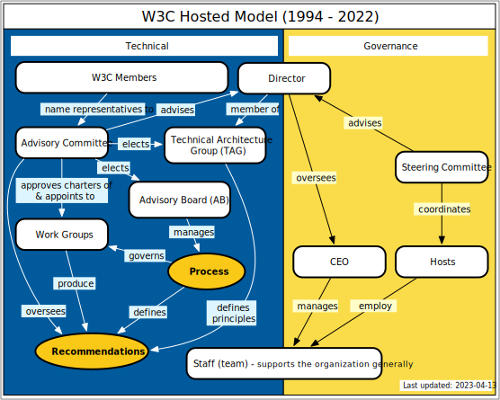
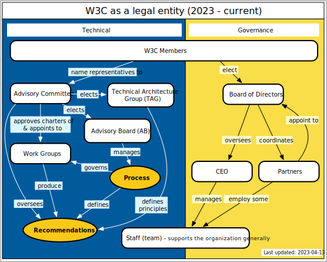

Leaving presentation mode.
Ralph Swick and David Singer
Interim CEO, Chair of the Board
The Consortium Today
W3C: Along the road
- The road we traveled
- Where we are today
- The road ahead
Where have we come from?
We have been and remain a worldwide consortium
We have been Hosted by independent organizations, led by a sole Director
Big changes:
- We are enabling the Founding Director to retire
- New legal structure; MIT is no longer Hosting
Strategic direction : become more integrated
Our theme for the future:
One Web, One W3C
Members, Hosts and Team had become less unified over time:
We are One W3C
Geographies have not been given equal attention:
We build One Web for One World
We were structured to launch the web:
We re-structure to support the future of the Web
Where are we today?
We have incorporated
World Wide Web Consortium Inc.
Hosts are becoming Partners
better integration and management of resources
Technical Governance Review

The Members appoint to the AC, who elect the AB and TAG, appoint to WGs, who produce RECs
Governance as it was

[Founding] Director authority, oversees team, advised by AB, AC, and Steering committee, SC oversees Hosts
Governance as it is (becoming)

Member-led, elected Board that oversees, Partners also appoint to the Board
Where we are : The Board
6 months, running, turning from crisis management to strategy and policy
7 Elected Directors
Robin Berjon
Koichi Moriyama
Mark Nottingham
David Singer
Eric Siow
Leonie Watson
Judy Zhu
4 Partner Directors
Dominique Hazaël-Massieux (ERCIM)
Chunming Hu (Beihang)
Jun Murai (WCAP)
(one vacant seat)
2 Appointed Directors
Gonzalo Camarillo
(one vacant seat)
Some tasks before the Board
Immediate:
- Partners 2023: agreements and budgets, financial transition
- Partners 2024: budgets (before the year starts)
- General membership and financial planning and reporting
Longer term:
- Membership structures: tiers, and dues
- Financial Reserve
- Partners, geographies, and our worldwide presence
Where we are :
Hosts became Partners
Partners work under unified budgeting and direction, from the Board and Officers
- MIT no longer a Host or Partner
- A new Foundation Partner in Japan
- New Partner relationship with ERCIM
- Beihang continues effectively as before
Where we are :
Preparing for the retirement of the Founding Director
- The Director's formal governance role is largely subsumed by the Board
- The Director-free Process document revision is out for ballot
- Sir Tim Berners-Lee has seats for life on the Board and TAG
We, the community, own our principles, architecture, and Direction
Where we are :
Team and Management
- Jeff Jaffe has retired as CEO, we thank him for his service;
CEO search underway
- Virtual, Inc. is supplying back-office functions,
notably invoicing, accounting, payroll
- Susan Westhaver (MIT Senior Admin) has departed,
Karen Myers (recruiting and Member on-boarding) has retired,
Wendy Seltzer (in-house counsel and Strategy Lead) has resigned,
Judy Brewer (WAI Director) has resigned to pursue a new opportunity
Where we are :
Facts and Figures
- We are solvent and operating (but need reserve funds)
- MIT transferred the dues members paid for 2023 operation, and more
- We have an agreement with ERCIM on the transfer of a portion of Q2 member fees
- We are finalizing an agreement with Keio University for the use of remaining retained member fees
- Membership as of 3 May: 434 Members in 42 Countries
Looking ahead
- One W3C :
stronger coordination and integration of team, members, partners, chapters
- One Web :
better tracking and leadership of industry and social trends and issues
- One W3C :
member and staff structures to serve and build the future
- One Web :
clearer about our Values and Vision for the Web and the World
Conclusion
W3C : re-unified, revitalized, ready to go
Questions? Join us at the Governance discussion this afternoon.
We're doing this together, representing two aspects of governance.
The CEO and President, responsible for management and operations.
The Board Chair, with the Board responsible for oversight and strategic direction.